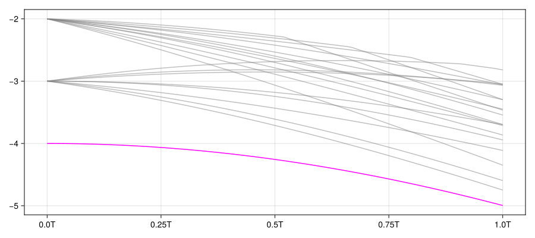

Adiabatic sweep (with QuantumObjectEvolution)
Inspirations taken from the QuTiP tutorial by J. R. Johansson.
This tutorial mainly demonstrates the use of QuantumObjectEvolution.
Introduction
The quantum adiabatic theorem is a fundamental principle in quantum mechanics that describes how quantum systems evolve when subjected to time-dependent conditions. This theorem states that if a quantum system is initialized in an eigenstate (typically the ground state) of its initial Hamiltonian, and if the Hamiltonian changes sufficiently slow, the system will remain in the corresponding eigenstate of the evolving Hamiltonian throughout the process.
For this theorem to hold, certain conditions must be satisfied: the system must evolve slow enough compared to the energy gap between the relevant eigenstate and other energy levels, and this gap must remain non-zero throughout the evolution.
Here, we will demonstrate the well-known application of the adiabatic theorem in quantum computing called \(\text{\emph{adiabatic sweep}}\). This is a method for preparing some desired quantum state by slowly evolving a quantum system with a time-dependent Hamiltonian. Essentially, the adiabatic theorem allows us to prepare the ground state of the final Hamiltonian \(H_1\) from the ground state of the initial Hamiltonian \(H_0\).
Model
We consider a chain of \(N\)-identical spin-\(1/2\) particles to study their spin dynamics and set our interest in finding the ground state of the condition that the spin chain has some random gap, leading to the random magnitude \(g_i\) of \(\hat{\sigma}^i_x \hat{\sigma}^{i+1}_x\) interaction with the neighboring spin.
Initially, we prepare the system such that the spins are free from interaction with each other and are all in the ground state, i.e.,
\[H_0 = \sum_i^N \frac{\varepsilon_0}{2} \hat{\sigma}^i_z,\] \[|\psi(0)\rangle = \bigotimes_{i=1}^N |g\rangle\]
Then, gradually, the Hamiltonian evolves to:
\[H_1 = \sum_{i=1}^N \frac{\varepsilon_0}{2} \hat{\sigma}^i_z + \sum_{i=1}^{N-1} g_i \hat{\sigma}^i_x \hat{\sigma}^{i+1}_x,\]
whose ground state are desired. By gradual change, we are subject to the simplest form of adiabatic sweep, i.e.,
\[H(t,T) = H_0 * (1-t/T) + H_1 * t/T,\]
where the parameter \(T\) determines how slow the Hamiltonian changes in time.
Code demonstration
N = 8 # number of spins
ε0 = 1 # energy gap of the spins
gs = rand(N-1) # use rand function for the random interaction strengths7-element Vector{Float64}:
0.7134411848382309
0.4168146841971999
0.8547263964070868
0.13806124908848239
0.0031776969897234775
0.6246612462523885
0.5014560642071517H0 = sum(1:N) do i
ε0/2 * multisite_operator(Val(N), i=>sigmaz())
end
ψ0 = kron(fill(basis(2,1), N)...)
print(H0)
Quantum Object: type=Operator() dims=[2, 2, 2, 2, 2, 2, 2, 2] size=(256, 256) ishermitian=true
256×256 SparseArrays.SparseMatrixCSC{ComplexF64, Int64} with 186 stored entries:
⎡⠑⢄⠀⠀⠀⠀⠀⠀⠀⠀⠀⠀⠀⠀⠀⠀⠀⠀⠀⠀⠀⠀⠀⠀⠀⠀⠀⠀⠀⠀⠀⠀⠀⠀⠀⠀⠀⠀⠀⠀⎤
⎢⠀⠀⠑⢄⠀⠀⠀⠀⠀⠀⠀⠀⠀⠀⠀⠀⠀⠀⠀⠀⠀⠀⠀⠀⠀⠀⠀⠀⠀⠀⠀⠀⠀⠀⠀⠀⠀⠀⠀⠀⎥
⎢⠀⠀⠀⠀⠑⢄⠀⠀⠀⠀⠀⠀⠀⠀⠀⠀⠀⠀⠀⠀⠀⠀⠀⠀⠀⠀⠀⠀⠀⠀⠀⠀⠀⠀⠀⠀⠀⠀⠀⠀⎥
⎢⠀⠀⠀⠀⠀⠀⠑⢄⠀⠀⠀⠀⠀⠀⠀⠀⠀⠀⠀⠀⠀⠀⠀⠀⠀⠀⠀⠀⠀⠀⠀⠀⠀⠀⠀⠀⠀⠀⠀⠀⎥
⎢⠀⠀⠀⠀⠀⠀⠀⠀⠑⢄⠀⠀⠀⠀⠀⠀⠀⠀⠀⠀⠀⠀⠀⠀⠀⠀⠀⠀⠀⠀⠀⠀⠀⠀⠀⠀⠀⠀⠀⠀⎥
⎢⠀⠀⠀⠀⠀⠀⠀⠀⠀⠀⠑⢄⠀⠀⠀⠀⠀⠀⠀⠀⠀⠀⠀⠀⠀⠀⠀⠀⠀⠀⠀⠀⠀⠀⠀⠀⠀⠀⠀⠀⎥
⎢⠀⠀⠀⠀⠀⠀⠀⠀⠀⠀⠀⠀⠑⢄⠀⠀⠀⠀⠀⠀⠀⠀⠀⠀⠀⠀⠀⠀⠀⠀⠀⠀⠀⠀⠀⠀⠀⠀⠀⠀⎥
⎢⠀⠀⠀⠀⠀⠀⠀⠀⠀⠀⠀⠀⠀⠀⠑⢄⠀⠀⠀⠀⠀⠀⠀⠀⠀⠀⠀⠀⠀⠀⠀⠀⠀⠀⠀⠀⠀⠀⠀⠀⎥
⎢⠀⠀⠀⠀⠀⠀⠀⠀⠀⠀⠀⠀⠀⠀⠀⠀⠑⢄⠀⠀⠀⠀⠀⠀⠀⠀⠀⠀⠀⠀⠀⠀⠀⠀⠀⠀⠀⠀⠀⠀⎥
⎢⠀⠀⠀⠀⠀⠀⠀⠀⠀⠀⠀⠀⠀⠀⠀⠀⠀⠀⠑⢄⠀⠀⠀⠀⠀⠀⠀⠀⠀⠀⠀⠀⠀⠀⠀⠀⠀⠀⠀⠀⎥
⎢⠀⠀⠀⠀⠀⠀⠀⠀⠀⠀⠀⠀⠀⠀⠀⠀⠀⠀⠀⠀⠑⢄⠀⠀⠀⠀⠀⠀⠀⠀⠀⠀⠀⠀⠀⠀⠀⠀⠀⠀⎥
⎢⠀⠀⠀⠀⠀⠀⠀⠀⠀⠀⠀⠀⠀⠀⠀⠀⠀⠀⠀⠀⠀⠀⠑⢄⠀⠀⠀⠀⠀⠀⠀⠀⠀⠀⠀⠀⠀⠀⠀⠀⎥
⎢⠀⠀⠀⠀⠀⠀⠀⠀⠀⠀⠀⠀⠀⠀⠀⠀⠀⠀⠀⠀⠀⠀⠀⠀⠑⢄⠀⠀⠀⠀⠀⠀⠀⠀⠀⠀⠀⠀⠀⠀⎥
⎢⠀⠀⠀⠀⠀⠀⠀⠀⠀⠀⠀⠀⠀⠀⠀⠀⠀⠀⠀⠀⠀⠀⠀⠀⠀⠀⠑⢄⠀⠀⠀⠀⠀⠀⠀⠀⠀⠀⠀⠀⎥
⎢⠀⠀⠀⠀⠀⠀⠀⠀⠀⠀⠀⠀⠀⠀⠀⠀⠀⠀⠀⠀⠀⠀⠀⠀⠀⠀⠀⠀⠑⢄⠀⠀⠀⠀⠀⠀⠀⠀⠀⠀⎥
⎢⠀⠀⠀⠀⠀⠀⠀⠀⠀⠀⠀⠀⠀⠀⠀⠀⠀⠀⠀⠀⠀⠀⠀⠀⠀⠀⠀⠀⠀⠀⠑⢄⠀⠀⠀⠀⠀⠀⠀⠀⎥
⎢⠀⠀⠀⠀⠀⠀⠀⠀⠀⠀⠀⠀⠀⠀⠀⠀⠀⠀⠀⠀⠀⠀⠀⠀⠀⠀⠀⠀⠀⠀⠀⠀⠑⢄⠀⠀⠀⠀⠀⠀⎥
⎢⠀⠀⠀⠀⠀⠀⠀⠀⠀⠀⠀⠀⠀⠀⠀⠀⠀⠀⠀⠀⠀⠀⠀⠀⠀⠀⠀⠀⠀⠀⠀⠀⠀⠀⠑⢄⠀⠀⠀⠀⎥
⎢⠀⠀⠀⠀⠀⠀⠀⠀⠀⠀⠀⠀⠀⠀⠀⠀⠀⠀⠀⠀⠀⠀⠀⠀⠀⠀⠀⠀⠀⠀⠀⠀⠀⠀⠀⠀⠑⢄⠀⠀⎥
⎣⠀⠀⠀⠀⠀⠀⠀⠀⠀⠀⠀⠀⠀⠀⠀⠀⠀⠀⠀⠀⠀⠀⠀⠀⠀⠀⠀⠀⠀⠀⠀⠀⠀⠀⠀⠀⠀⠀⠑⢄⎦Hint = sum(1:N-1) do i
gs[i] * multisite_operator(Val(N), i=>sigmax(), i+1=>sigmax())
end
H1 = H0 + Hint
print(H1)
Quantum Object: type=Operator() dims=[2, 2, 2, 2, 2, 2, 2, 2] size=(256, 256) ishermitian=true
256×256 SparseArrays.SparseMatrixCSC{ComplexF64, Int64} with 1978 stored entries:
⎡⠿⣧⣷⡈⠳⠄⠀⠘⠦⡀⠀⠀⠀⠀⠀⠳⢄⠀⠀⠀⠀⠀⠀⠀⠀⠀⠀⠀⠀⠈⠳⣄⠀⠀⠀⠀⠀⠀⠀⠀⎤
⎢⡙⠻⣿⣿⣰⢦⡀⠀⠀⠈⠂⠀⠀⠀⠀⠀⠈⠳⣄⠀⠀⠀⠀⠀⠀⠀⠀⠀⠀⠀⠀⠈⠳⣄⠀⠀⠀⠀⠀⠀⎥
⎢⠙⠆⠰⣞⠿⣧⣌⣦⠠⣄⣄⠀⠀⠀⠀⠀⠀⠀⠈⠳⠀⠀⠀⠀⠀⠀⠀⠀⠀⠀⠀⠀⠀⠈⠳⣄⠀⠀⠀⠀⎥
⎢⣀⠀⠀⠈⠢⣽⣿⣿⣦⢈⠁⠑⣄⠀⠀⠀⠀⠀⠀⠀⠀⠀⠀⠀⠀⠀⠀⠀⠀⠀⠀⠀⠀⠀⠀⠈⠳⣄⠀⠀⎥
⎢⠈⠣⡀⠀⠀⢦⡈⢛⢿⣷⡅⠀⠀⠑⢄⠀⠀⠀⠀⠀⠀⠀⠀⠀⠀⠀⠀⠀⠀⠀⠀⠀⠀⠀⠀⠀⠀⠈⠳⣄⎥
⎢⠀⠀⠈⠀⠀⠙⢅⠀⠁⠉⢿⣷⣧⡈⠻⠀⠀⠈⢢⡀⠑⣄⠀⠀⠀⠀⠀⠀⠀⠀⠀⠀⠀⠀⠀⠀⠀⠀⠀⠈⎥
⎢⠀⠀⠀⠀⠀⠀⠀⠙⢄⠀⡉⠻⣵⣿⣴⠢⡀⠀⠀⠉⠀⠈⠑⣄⠀⠀⠀⠀⠀⠀⠀⠀⠀⠀⠀⠀⠀⠀⠀⠀⎥
⎢⢤⡀⠀⠀⠀⠀⠀⠀⠀⠑⠛⠂⠰⡛⠛⣤⣼⡆⠠⣄⠀⠀⠀⠈⠓⣄⠀⠀⠀⠀⠀⠀⠀⠀⠀⠀⠀⠀⠀⠀⎥
⎢⠀⠑⢦⡀⠀⠀⠀⠀⠀⠀⡀⠀⠀⠈⠲⠿⣿⢟⣦⣈⠀⠀⠀⠀⠀⠈⠓⢄⠀⠀⠀⠀⠀⠀⠀⠀⠀⠀⠀⠀⎥
⎢⠀⠀⠀⠙⢦⡀⠀⠀⠀⠀⠈⠲⡄⠀⠀⢦⡈⢻⣻⣾⠀⠀⠀⠀⠀⠀⠀⠈⠓⢄⠀⠀⠀⠀⠀⠀⠀⠀⠀⠀⎥
⎢⠀⠀⠀⠀⠀⠀⠀⠀⠀⠀⠑⢤⡀⠀⠀⠀⠀⠀⠀⠀⡿⣯⣧⡈⠳⠀⠀⠘⠦⡀⠀⠀⠀⠀⠈⠳⣄⠀⠀⠀⎥
⎢⠀⠀⠀⠀⠀⠀⠀⠀⠀⠀⠀⠀⠑⢤⡀⠀⠀⠀⠀⠀⡉⠻⣵⣿⣶⠦⡀⠀⠀⠈⠀⠀⠀⠀⠀⠀⠈⠳⢄⠀⎥
⎢⠀⠀⠀⠀⠀⠀⠀⠀⠀⠀⠀⠀⠀⠀⠙⢤⡀⠀⠀⠀⠙⠂⠸⡟⠛⣤⣬⠆⠠⣤⢄⠀⠀⠀⠀⠀⠀⠀⠈⠓⎥
⎢⠀⠀⠀⠀⠀⠀⠀⠀⠀⠀⠀⠀⠀⠀⠀⠀⠙⢄⡀⠀⣀⠀⠀⠈⠢⠟⣿⢟⣦⣈⠀⠑⣄⠀⠀⠀⠀⠀⠀⠀⎥
⎢⡀⠀⠀⠀⠀⠀⠀⠀⠀⠀⠀⠀⠀⠀⠀⠀⠀⠀⠙⢄⠈⠣⡀⠀⠀⣦⡈⢻⢿⣷⣀⢀⠀⢑⣄⠀⠀⡀⠀⠀⎥
⎢⠙⢦⡀⠀⠀⠀⠀⠀⠀⠀⠀⠀⠀⠀⠀⠀⠀⠀⠀⠀⠀⠀⠀⠀⠀⠑⢄⠀⠀⢘⢿⣷⣥⡈⠳⠀⠀⠈⢢⡀⎥
⎢⠀⠀⠙⢦⡀⠀⠀⠀⠀⠀⠀⠀⠀⠀⠀⠀⠀⠀⠀⠀⠀⠀⠀⠀⠀⠀⠀⠙⢄⢀⡁⠻⣿⣿⣟⠢⡀⠀⠀⠉⎥
⎢⠀⠀⠀⠀⠙⢦⡀⠀⠀⠀⠀⠀⠀⠀⠀⠀⠀⠀⠀⠀⢦⡀⠀⠀⠀⠀⠀⠀⠀⠙⠙⠂⠻⡙⢻⣶⡽⠆⠰⣄⎥
⎢⠀⠀⠀⠀⠀⠀⠙⢦⡀⠀⠀⠀⠀⠀⠀⠀⠀⠀⠀⠀⠀⠙⢦⡀⠀⠀⠀⠀⠀⠠⡀⠀⠀⠈⠳⠏⣿⣿⣦⣌⎥
⎣⠀⠀⠀⠀⠀⠀⠀⠀⠙⢦⡀⠀⠀⠀⠀⠀⠀⠀⠀⠀⠀⠀⠀⠑⢦⠀⠀⠀⠀⠀⠈⠲⡄⠀⠐⢦⡈⢿⢻⣶⎦Here, we define the time-dependent Hamiltonian with QuantumObjectEvolution.
Quantum Object Evo.: type=Operator() dims=[2, 2, 2, 2, 2, 2, 2, 2] size=(256, 256) ishermitian=true isconstant=false
(ScalarOperator(0.0 + 0.0im) * MatrixOperator(256 × 256) + ScalarOperator(0.0 + 0.0im) * MatrixOperator(256 × 256))We will show below the usage of field p in solving the eigen problems and the dynamics.
function ψg(H)
_, vecs = eigenstates(H)
return vecs[1]
end
ψf_truth = ψg(H1) |> to_sparse
print(ψf_truth)
Quantum Object: type=Ket() dims=[2, 2, 2, 2, 2, 2, 2, 2] size=(256,)
256-element SparseArrays.SparseVector{ComplexF64, Int64} with 128 stored entries:
[1 ] = 4.82309e-5+0.0im
[4 ] = -0.00018012+0.0im
[6 ] = 0.000104492+0.0im
[7 ] = -5.56025e-5+0.0im
[10 ] = -0.0301887+0.0im
[11 ] = 0.0134359+0.0im
[13 ] = -0.0255244-0.0im
⋮
[241] = 0.000366673+0.0im
[244] = -0.00137142+0.0im
[246] = 0.000791145+0.0im
[247] = -0.000419518+0.0im
[250] = -0.231742+0.0im
[251] = 0.10314+0.0im
[253] = -0.195936+0.0im
[256] = 0.775439+0.0imWe can see that the truthful ground state we are preparing is indeed very complex.
For the adiabatic theorem to apply, we have to check for the gap between the ground state and first excited state remaining non-zero throughout the evolution.
fig = Figure(size=(900, 400))
ax = Axis(fig[1,1], xticks = (0:0.25:1, ["$(t)T" for t in 0:0.25:1]))
for idx in 1:20 # only check for the lowest 20 eigenvalues
color = (idx == 1) ? :magenta : (:gray,0.5)
lines!(ax, range(0,1,length(tlist)), eigs[:,idx], label = string(idx), color = color)
end
fig
The plot shows that the gap is nonvanishing and thus validates the evolution. So we proceed to check the expectation value dynamics of the final Hamiltonian and the fidelity dynamics to the truthful ground state throughout the evolution.
Tlist = 10 .^ (0:0.25:1.25)
results = map(Tlist) do T
tlist = range(0,T, 101)
params = (T=T,)
sesolve(H, ψ0, tlist, e_ops = [H1, ket2dm(ψf_truth)], params=params)
# for solving dynamics, we can pass `params` to the keyword argument `params` for its reference
end;Progress: [==============================] 100.0% --- Elapsed Time: 0h 00m 00s (ETA: 0h 00m 00s)
Progress: [==============================] 100.0% --- Elapsed Time: 0h 00m 00s (ETA: 0h 00m 00s)
Progress: [==============================] 100.0% --- Elapsed Time: 0h 00m 00s (ETA: 0h 00m 00s)
Progress: [==============================] 100.0% --- Elapsed Time: 0h 00m 00s (ETA: 0h 00m 00s)
Progress: [==============================] 100.0% --- Elapsed Time: 0h 00m 00s (ETA: 0h 00m 00s)
Progress: [==============================] 100.0% --- Elapsed Time: 0h 00m 00s (ETA: 0h 00m 00s)fig = Figure(size=(900, 400))
axs = Axis.([fig[1,1], fig[1,2]])
axs[1].title = L"\langle H_f \rangle"
axs[1].xticks = (0:0.25:1, ["$(t)T" for t in 0:0.25:1])
axs[2].title = L"|\langle \psi_G^f |\psi(t)\rangle|^2"
axs[2].xticks = (0:0.25:1, ["$(t)T" for t in 0:0.25:1])
for ax_idx in 1:2, T_idx in 1:length(Tlist)
T = Tlist[T_idx]
exps = results[T_idx].expect
tlist = range(0,1,101)
lines!(axs[ax_idx], tlist, real(exps[ax_idx,:]), label = L"10^{%$(string(log10(T)))}")
end
Legend(fig[1,3], axs[1], L"T")
figAs the plot showed, the fidelity between the prepared final state and the truthful ground state reaches 1 as the total evolution time \(T\) increases, showcasing the requirement of the adiabatic theorem that the change has to be gradual.
Version Information
QuantumToolbox.jl: Quantum Toolbox in Julia
≡≡≡≡≡≡≡≡≡≡≡≡≡≡≡≡≡≡≡≡≡≡≡≡≡≡≡≡≡≡≡≡≡≡≡≡≡≡≡≡≡≡≡≡≡
Copyright © QuTiP team 2022 and later.
Current admin team:
Alberto Mercurio and Yi-Te Huang
Package information:
====================================
Julia Ver. 1.11.6
QuantumToolbox Ver. 0.34.0
SciMLOperators Ver. 1.5.0
LinearSolve Ver. 3.28.0
OrdinaryDiffEqCore Ver. 1.30.0
System information:
====================================
OS : Linux (x86_64-linux-gnu)
CPU : 4 × AMD EPYC 7763 64-Core Processor
Memory : 15.621 GB
WORD_SIZE: 64
LIBM : libopenlibm
LLVM : libLLVM-16.0.6 (ORCJIT, znver3)
BLAS : libopenblas64_.so (ilp64)
Threads : 4 (on 4 virtual cores)